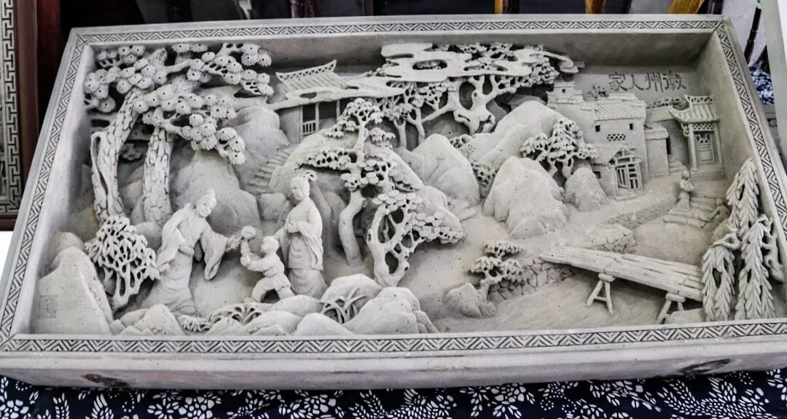

CHRONICLE / 活动纪实
脚步有迹，
来路可寻。
从 2016 年 12 月的第一次成员见面会，到最新一期的个人实践感悟。按年份排列，可按期次筛选。
202611 条记录
行者集结令 | 此去皖南，山水为证
团队动态行者无疆邀你共赴匠心之约！
团队动态【行者无疆·文化科普——荣昌夏布】
文化科普【行者无疆・文化科普 —— 荣昌陶瓷】
文化科普【行者无疆·文化科普—荣昌折扇】
文化科普【行者无疆·文化科普——蜀绣】
文化科普【行者无疆·文化科普—重庆三峡博物馆】
文化科普【行者无疆·文化科普——重庆川剧博物馆】
文化科普【行者无疆·文化科普—重庆母城非遗馆】
文化科普202518 条记录
行者再启，薪火相传
团队动态行者无疆邀你共赴匠心之约！
团队动态【行者无疆·文化科普——天津民俗博物馆】
文化科普【行者无疆·文化科普——掐丝珐琅釉彩】
文化科普【行者无疆·文化科普——津派花丝镶嵌】
文化科普【行者无疆·文化科普——天津葫芦烙画】
文化科普非遗旧梦，启航新章
实践纪实行者招新倒计时3天！
团队动态行者无疆·秦育遗韵 | 团队集结！
团队动态知识竞赛完美收官，文化传承薪火长燃！
团队动态【行者无疆·文化科普——易俗社文化街区】
文化科普【行者无疆·文化科普——永兴坊】
文化科普202412 条记录
【行者无疆·文化科普——西安生命之树】
文化科普【行者无疆·文化科普——高家大院】
文化科普【行者无疆·文化科普——碑林】
文化科普凝心共铸团队魂，破浪启航征远尘
团队动态行者无疆知识竞赛它来啦！
团队动态行八载，疆无垠！
团队动态号外！号外！行者招新啦！
团队动态行者无疆·豫旅拾遗 | 集结篇
团队动态20233 条记录
20226 条记录
【行者无疆 踏冰逐梦】 团队见面会
团队动态行者无疆实践团第十二期实践邀你来！
团队动态【写意江南】勾留烟雨 智汇杭城
实践纪实【行者无疆 流眄苏杭】团队见面会
团队动态行者无疆实践团第十一期实践诚邀你来！
团队动态灵魂不羁，脚步不止
实践纪实20215 条记录
行者无疆实践团第十期团队组建开始啦！
团队动态【行者无疆 寓绻淮扬】行醉淮扬许无疆
实践纪实【行者无疆 寓绻淮扬】校园采访总结
影像记录行者无疆实践团招新开始啦！
团队动态【煌然成篇·十五】静听驼铃响，心触赤子怀
实践纪实20209 条记录
【行者无疆 聆谂丝韵】校园采访活动总结
影像记录【行者无疆 聆谂丝韵】团队见面会
团队动态行者无疆实践团招新开始啦！
团队动态【行者无疆 言念潇湘】行者disco
影像记录【行者无疆 言念潇湘】精品文化科普（四）
文化科普【行者无疆 言念潇湘】精品文化科普（三）
文化科普【行者无疆 言念潇湘】校园采访活动总结
影像记录【行者无疆 言念潇湘】精品文化科普（二）
文化科普201921 条记录
【行者无疆 言念潇湘】精品文化科普（一）
文化科普【行者无疆 言念潇湘】团队见面会
团队动态致 【行者无疆 源洄渝州】
实践纪实【行者无疆·源洄渝州】渣滓洞采访视频
影像记录【行者无疆·源洄渝州】解放碑采访视频
影像记录【行者无疆，我们一直在继续】
团队动态20186 条记录
【行者无疆·韶忆长安】 行者篇
实践纪实行者电台：文徽徽以溢目,音泠泠而盈耳
影像记录20174 条记录
20162 条记录